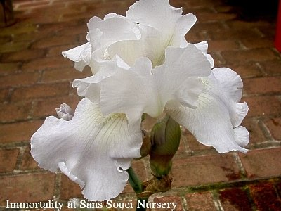

|  |
Back to TB Master Page
|
|
Sans Souci Nursery, LLC
© 2004 Sans Souci Nursery . This image may only be used and/or reproduced by written permission of Sans Souci Nursery.
Specializing In Irises 3819 Beatty Road Monkton, Maryland 21111 Phone :(410) 557-0250 E-Mail:lbh0251@msn.com Webpage and catalogue production by BATW Web Services | |